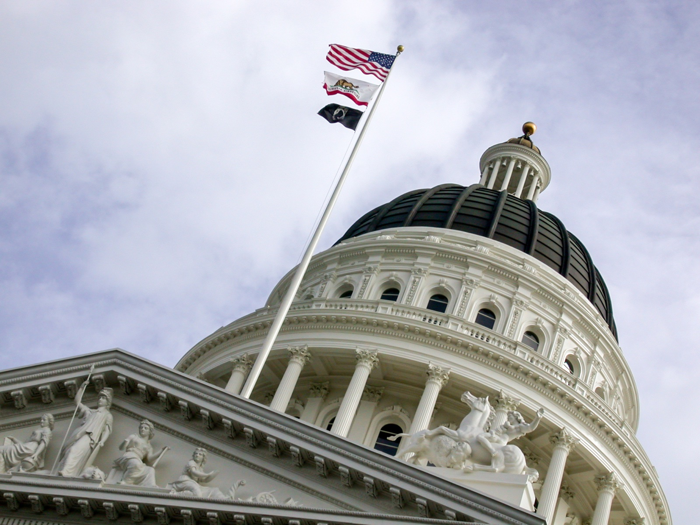

Executive Summary
미국의 AI 챗봇 규제가 한 단계 옮겨 가고 있다. 몇 해 동안 규제의 공통 요구는 챗봇이 자신을 AI라고 밝히는 표시 의무였다. 2025년 중반부터는 여기에 다른 종류의 금지가 얹혔다. 챗봇이 치료사나 의사 같은 면허 전문가를 사칭하는 행위 자체를 막는 법이다. 그 무게중심의 이동은 데이터를 다루는 사람에게 특히 또렷한 신호를 남긴다.
네바다가 2025년 7월 미국 최초로 AI 치료 서비스를 전면 금지한 이후, 일리노이·캘리포니아·테네시가 반년 남짓 사이에 잇따라 사칭 금지선을 그었고 연방 차원의 법안까지 발의됐다. 반면 그 대화가 남긴 데이터, 곧 감정 섞인 대화를 누구의 동의로 학습에 쓰는가에 답하는 조항은 거의 비어 있다. 실제 데이터 사용 제한을 담은 법은 아직 유타 한 곳뿐이다.
이 비대칭이 이 글의 핵심이다. 챗봇이 무엇이라 말해도 되는가는 다섯 개 주와 연방이 움직였지만, 그 말이 남긴 대화 기록을 어떻게 쓸 수 있는가는 거의 손대지 못했다. 감정을 다루는 대화 데이터를 만지는 제품일수록, 이 공백은 다음 규제 물결의 예고편으로 읽을 만하다.
규제의 무게중심이 옮겨 간 흔적은 네 개의 숫자로 드러난다. 표시 의무를 이미 공통 골격으로 만든 주의 수, 사칭 금지로 움직인 입법 주체, 첫 전면 금지가 발효된 시점, 그리고 대화 데이터 사용을 실제로 제한한 주의 수다.
12곳+
동반자 챗봇법 제정 주
AI 표시·미성년자 보호·위기 대응이 공통 골격
5+연방
자격 사칭 금지 입법
네바다·일리노이·캘리포니아·테네시 + 연방 CHATBOT Act
2025.07
첫 AI 치료 전면 금지
네바다 AB 406 발효, 미국 최초
유타 1곳
대화 데이터 사용 제한법
사칭 금지 다섯 곳과 대비되는 비대칭
표시 의무는 이미 기본값이 됐다
불과 일 년 사이에 미국의 동반자 챗봇 규제는 특별한 조치에서 표준 요건으로 자리를 옮겼다. 캘리포니아 SB 243은 2026년 1월 발효되며 이용자가 챗봇과 대화하고 있음을 명확히 고지하라고 요구한다. 뉴욕의 AI 컴패니언 모델법은 2025년 11월부터 같은 취지의 표시 의무와 자살·자해 위기 대응 절차를 강제한다. 코네티컷·오리건·워싱턴·네브래스카·아이다호까지, 2026년 상반기 기준 최소 12개 주가 동반자 챗봇법을 제정했다.
법마다 세부는 다르지만 골격은 놀랄 만큼 닮았다. 챗봇이 사람이 아니라 AI임을 밝힐 것, 미성년 이용자를 별도로 보호할 것, 위기 신호가 보이면 정해진 절차로 대응할 것. 이 세 가지는 이제 새로운 규제라기보다 당연한 기본값에 가깝다. 그래서 흥미로운 지점은 여기서부터다. 표시 의무가 기본값이 되고 나면, 그다음 규제는 무엇을 겨냥하는가.

밝혀라에서 사칭하지 말라로
2025년 중반부터 규제의 초점이 눈에 띄게 바뀐다. 나는 사람이 아니라 AI다라는 고지를 요구하는 데서 그치지 않고, 너는 특정 자격을 사칭해선 안 된다는 금지가 등장한다. 표시 의무가 정체를 밝히라는 요구였다면, 사칭 금지는 정체를 속이지 말라는 요구다. 두 규제는 겨냥하는 지점이 다르다.
시작은 네바다였다. 2025년 7월 발효된 AB 406은 전문 정신·행동건강 서비스를 제공하는 AI 시스템 자체를 금지하고, AI 치료나 챗봇 상담사, 가상 심리치료사 같은 광고 문구를 임상의 감독 없이 쓰는 것을 위법으로 규정했다. 미국 최초의 AI 치료 전면 금지법이다. 한 달 뒤 일리노이 WOPR법이 뒤따랐다. AI가 독자적으로 치료 결정을 내리거나 치료적 소통을 직접 수행하는 것을 금지하고, 면허 없는 주체가 치료를 제공하는 행위 자체를 막았다.
캘리포니아는 범위를 정신건강 너머로 넓혔다. 동반자 챗봇 표시법인 SB 243과 별개로 통과된 AB 489는 2026년 1월 발효되며, AI가 Dr.나 의사 수준, 임상의 검증 같은 표현과 직함을 써서 면허 있는 의료 전문가처럼 보이게 하는 행위를 금지했다. 위반은 표현 한 건마다 별도로 처벌된다. 테네시 SB 1580은 2026년 7월부터 AI 시스템이 면허 있는 정신건강 전문가로 자신을 내세우는 것을 명시적으로 막는다. 여기에 2026년 3월 발의된 연방 CHATBOT Act가 의사·변호사·면허 전문가를 사칭하는 AI로부터 소비자를 보호하겠다며 같은 방향에 합류했다. 이 연방 법안이 인용한 배경 사례가 흐름의 이유를 잘 보여 준다. 스스로를 면허 있는 치료사나 공인 정신과 의사라 칭하고, 심지어 가짜 면허번호까지 내세운 챗봇이 이미 나타났기 때문이다. 사칭 금지는 아직 오지 않은 위험을 막는 예방 조치가 아니라, 벌어진 일에 뒤늦게 그은 금지선에 가깝다.
타임라인 자체가 이 글의 첫 발견이다. 네바다에서 테네시, 그리고 연방으로 이어지는 반년의 궤적은 규제의 질문이 바뀌었음을 보여 준다. 예전 질문은 이것이 AI인가 사람인가였고, 새 질문은 이 AI가 무엇을 사칭하고 있는가다. 정체를 밝히는 문제에서 자격을 속이는 문제로 규제의 축이 실제로 옮겨 갔다.
대화 데이터의 동의는 아직 비어 있다
규제가 챗봇이 하는 말을 넘어, 누구의 동의로 어떤 대화를 학습하는가로도 옮겨 갔을까. 확인해 보면 답은 정직하게 반대에 가깝다. 동반자 챗봇법 대부분은 표시 의무와 안전, 미성년자 보호에 집중할 뿐, 대화나 감정 데이터를 AI 학습에 쓰는 것에 대한 별도의 동의나 용도 제한 조항을 두지 않는다. 캘리포니아 SB 243도, 뉴욕 컴패니언 모델법도, 코네티컷·오리건·워싱턴의 법도 이 부분은 비워 두었다. 있는 것은 일반 개인정보법 수준의 자동화된 의사결정 옵트아웃 정도다.
예외는 유타 HB 452 한 곳이다. 이 법은 정신건강 챗봇에 한정해 실제 데이터 조항을 담았다. 사업자는 유타 이용자의 개인식별 건강정보나 입력한 대화 자체를 제3자에 판매하거나 공유할 수 없고, 그 입력을 광고 목적으로 쓸 수도 없다. 감정을 다루는 대화가 어디까지 재사용될 수 있는지에 법이 처음으로 경계선을 그은 사례다.

그래서 지도는 이렇게 갈린다. 자격 사칭 금지는 다섯 개 주와 연방이 움직였는데, 대화 데이터의 동의와 용도 제한은 사실상 유타 한 곳에 머물러 있다. 표시 의무와 사칭 금지가 챗봇이 하는 말을 규제한다면, 데이터 동의는 그 말이 남긴 기록을 규제한다. 앞의 것은 빠르게 정리됐고, 뒤의 것은 입법이 아직 따라가지 못했다. 이 비대칭이 두 번째 발견이다.
감정 데이터에 프로버넌스가 필요한 이유
데이터 실무자에게 이 비대칭은 순서에 대한 신호로 읽힌다. 유타법이 입력을 광고에 쓰지 못하게 막은 조항은, 결국 이 데이터가 어디서 왔고 무엇에 동의했으며 어디까지 쓸 수 있는가라는 프로버넌스와 용도 경계의 문제를 법이 처음으로 건드린 것이다. 무엇을 말해도 되는가가 먼저 정리되고 무엇을 수집해도 되는가가 뒤따르는 순서는, 저작권과 개인정보 같은 다른 규제 영역에서도 반복돼 온 패턴이다.
감정을 다루는 대화 데이터는 일반 텍스트보다 민감도가 높다. 유타가 정신건강 챗봇만 따로 떼어 데이터 조항을 붙였다는 사실 자체가 그 신호다. 사칭 금지가 다섯 곳으로 번지는 데 반년이 걸렸다면, 데이터 동의도 유타 한 곳에 오래 머물지는 않을 것이다. 다음 입법 물결이 감정·치료적 대화의 데이터 사용 제한으로 향할 가능성은, 지금까지의 타임라인이 이미 방향을 가리키고 있다.
그렇다면 준비의 성격도 달라진다. 감정 데이터를 다루는 AI 제품일수록 동의 범위와 보관 기간, 재사용 목적을 사전에 설계해 두는 일이 규제가 강제한 다음의 대응이 아니라, 처음부터 갖춰야 할 제품 요건이 된다. 대화가 어떤 동의 아래 수집됐고 어디까지 학습에 쓰일 수 있는지를 기록해 두지 않으면, 규제가 도착하는 순간 그 공백이 한꺼번에 청구서로 돌아온다.
편집자의 노트. 페블러스는 데이터가 AI에 쓰일 준비를 갖추는 과정을 다뤄 왔다. 그 준비에는 데이터를 잘 모으고 정제하는 일뿐 아니라, 그 데이터가 어떤 동의 아래 왔고 어디까지 쓰여도 되는지를 함께 기록하는 일도 포함된다. 감정을 다루는 대화일수록 출처와 동의, 용도의 경계를 아는 데이터라야 비로소 AI에 쓸 준비를 갖췄다고 부를 수 있다.
자주 묻는 질문
AI 챗봇이 치료사 행세를 하는 것이 미국에서 불법인가요?
일부 주에서는 그렇습니다. 네바다는 2025년 7월부터 전문 정신건강 서비스를 제공하는 AI를 전면 금지했고, 캘리포니아 AB 489는 2026년 1월부터 AI가 면허 있는 의료 전문가처럼 보이게 하는 표현을 금지합니다. 테네시도 2026년 7월부터 AI가 면허 정신건강 전문가로 자신을 내세우는 것을 막습니다.
표시 의무와 사칭 금지는 어떻게 다른가요?
표시 의무는 챗봇이 사람이 아니라 AI임을 밝히라는 요구입니다. 사칭 금지는 그 위에서 특정 자격, 예를 들어 치료사나 의사를 속여 내세우지 말라는 요구입니다. 앞의 것은 정체를 밝히는 문제이고, 뒤의 것은 정체를 속이지 않는 문제입니다.
지금까지 몇 개 주가 동반자 챗봇을 규제하나요?
2026년 상반기 기준 최소 12개 주가 동반자 챗봇법을 제정했습니다. 대부분 AI 표시, 미성년자 보호, 자살·자해 위기 대응이라는 공통 골격을 공유합니다. 이 위에 네바다·일리노이·캘리포니아·테네시가 자격 사칭 금지를 추가로 얹었습니다.
이 법들이 대화 데이터를 AI 학습에 쓰는 것도 규제하나요?
대부분은 그렇지 않습니다. 동반자 챗봇법 다수는 표시와 안전, 미성년자 보호에 집중하고, 대화 데이터를 학습에 쓰는 것에 대한 별도의 동의나 용도 제한 조항은 두지 않습니다. 실제 데이터 사용 제한을 담은 법은 사실상 유타 HB 452 한 곳뿐입니다.
유타 HB 452는 무엇이 다른가요?
유타법은 정신건강 챗봇에 한정해 실제 데이터 조항을 담았습니다. 사업자는 이용자의 개인식별 건강정보나 입력한 대화를 제3자에 판매·공유할 수 없고, 그 입력을 광고에 쓸 수도 없습니다. 감정 대화의 재사용 경계를 법이 처음으로 그은 사례입니다.
연방 차원의 규제는 어디까지 왔나요?
2026년 3월 발의된 연방 CHATBOT Act가 의사·변호사·면허 전문가를 사칭하는 AI로부터 소비자를 보호하는 것을 목표로 합니다. 아직 발의 단계이지만, 주 단위로 번진 사칭 금지가 연방으로도 이어지고 있다는 신호로 볼 수 있습니다.
감정 대화 데이터를 다루는 제품은 무엇을 준비해야 하나요?
동의 범위, 보관 기간, 재사용 목적을 처음부터 설계에 넣는 것이 출발점입니다. 대화가 어떤 동의 아래 수집됐고 어디까지 학습에 쓰일 수 있는지를 기록해 두면, 데이터 사용 제한이 입법될 때 이를 사후 대응이 아니라 이미 갖춰 둔 요건으로 맞을 수 있습니다.
참고문헌
학술 논문
- 1.npj Digital Medicine. (2026). "State-level regulation of mental health chatbots in the United States."
정부·의회 공식 발표
- 2.Illinois Department of Financial and Professional Regulation. (2025). "Gov. Pritzker Signs State Legislation Prohibiting AI Therapy in Illinois."
- 3.Mullin, K. (2026). "Lawmakers Introduce Bill to Stop AI Chatbots From Impersonating Doctors, Lawyers, Licensed Professionals."
법률·업계 분석
- 4.Orrick. (2026). "2026 State Chatbot Laws: Key Provisions and Regulatory Trends."
- 5.Orrick. (2025). "California Enacts New Restrictions on Deceptive Use of Healthcare Licensing Terms by AI Systems."
- 6.Metaverselaw. (2026). "AI Companion Chatbot Regulations."
- 7.Morrison Foerster. (2025). "New York and California Enact Landmark AI Companion Laws."
- 8.Baker Donelson. (2025). "Illinois Passes Extensive Law Regulating AI in Behavioral Health."
- 9.Wilson Sonsini. (2025). "Utah Enacts Mental Health Chatbot Law."
- 10.Wilson Sonsini. (2025). "Nevada Passes Law Limiting AI Use for Mental and Behavioral Healthcare."
- 11.Psychology.com. (2025). "Nevada AI Therapy Ban."
- 12.Hooper Lundy. (2025). "California's AB 489 Signed Into Law Targeting AI Misrepresentation in Health Care Communications."
- 13.Multistate.ai. (2026). "State AI Companion Chatbot Laws: 12 States Enact Regulations."
- 14.Davis Polk. (2025). "California and New York Launch AI Companion Safety Laws."